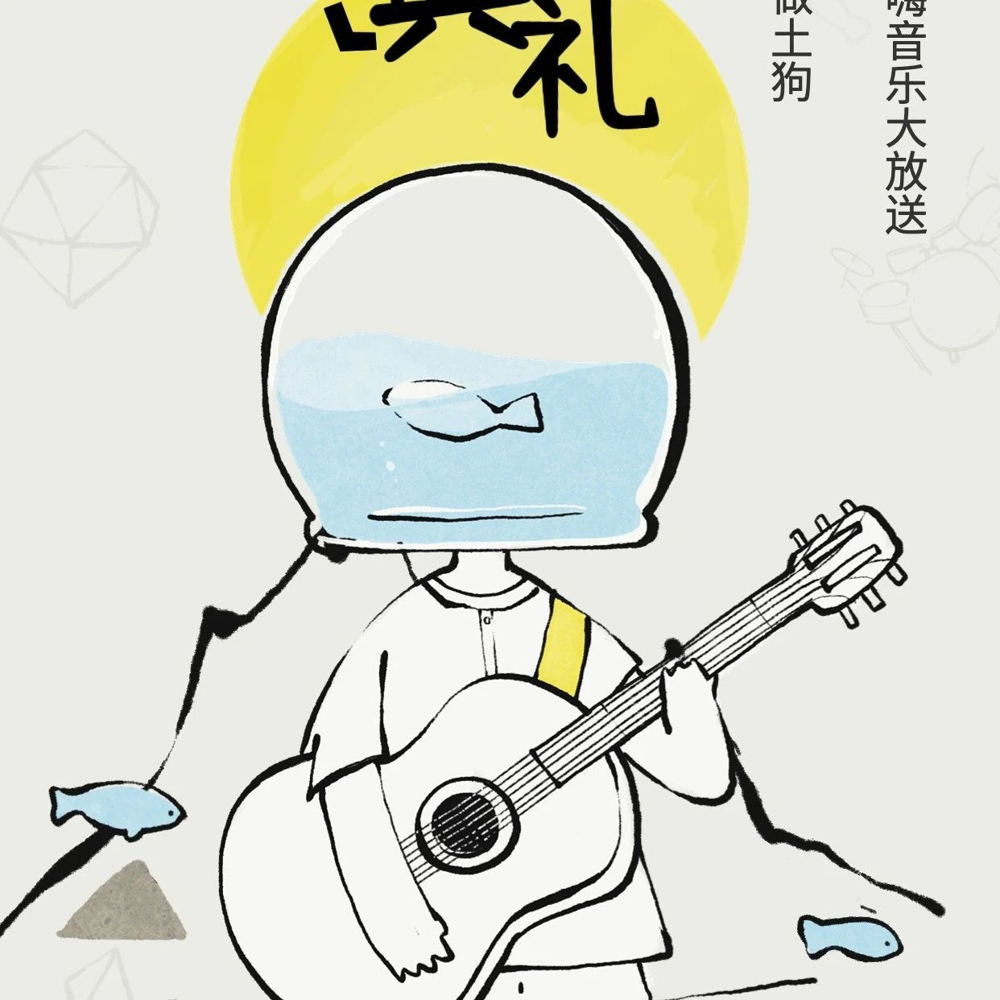

第三期新手营结营典礼来啦！
这一次，不需要绞尽脑汁PK啦，Web3娱ä¹ç››å®´æ¥è¢ï¼
🤡神秘嘉宾土味音乐大放送
🐕康师傅烹饪站现场开图做土狗
🍵家人们的茶话会，八卦接龙
ğŸ§§å…¨åœºä¸¤è½®æŠ½å¥–æ´»åŠ¨ï¼Œç§¯åˆ†ç©ºæŠ•ï¼Œè®©ä½ ä½“éªŒ3的乐趣
⏰: 2023/7/9 20:00（UTC+8）
腾讯会议号：239-414-287
